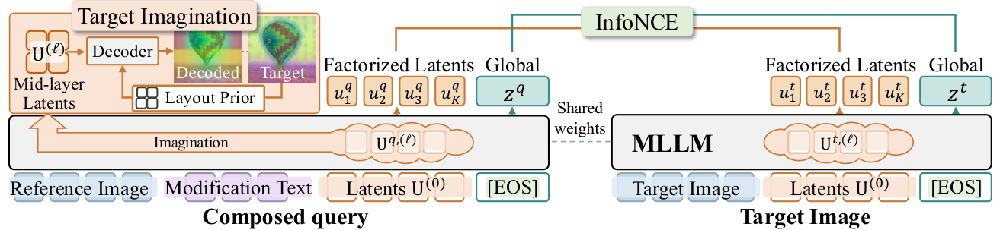
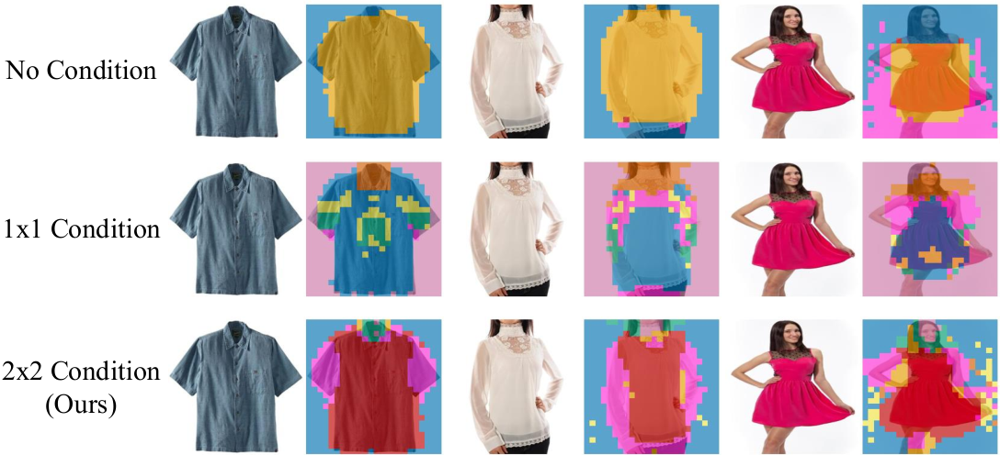

目录 · 9 节
1这个任务难在哪2整体流程3修改槽怎么学：给粗轮廓，让槽补细节4让槽对检索有用：两层对比学习和注意力蒸馏5检索时怎么用：先用 [EOS] 召回，再用槽重排6结果：在两个基准上都领先7我认为它的局限8搜索团队可以怎么试9结论做组合图像检索时，让多模态大模型先把改完后的图分成几块表示出来，再汇总成检索向量，效果会更好。这个任务是给一张参考图加一句修改要求，比如把衬衫换成红色长袖，找出改完后的那张图。常见做法只靠对比学习把参考图和修改要求压成一个 embedding。FactEmbed 在输入末尾加了几个修改槽，每个槽是一个额外的向量，读完参考图和修改要求后装下改完那张图的一部分细节，最后一个 token 再把它们汇总。训练时接一个小解码器，只给它这些槽和目标图压成 2×2 四格的粗略特征，要它补出各小块的细节。它在两个常用基准的主要指标上都领先。
做多模态检索、尤其是"以图改图"搜索的团队值得读。它的思路很朴素：训练时用一个还原目标图的辅助任务，逼几个槽分别装下目标图的不同部分，大模型后面几层再把这些槽汇总成检索向量。训练时多加一个还原目标图的任务，检索时却几乎不加成本，因为解码器只在训练时用，检索时每张图只多存一个向量。在去掉了歧义样本的 Refined-CIRR 上，R@1 从最强基线 ReCALL 的 67.41 提到 68.99。
这个任务难在哪
组合图像检索（composed image retrieval）的输入是一张参考图加一句话，话里只说"哪里要变"。模型得自己分清哪些要改、哪些要保留。下面用一个示意例子说明。
| 内容（示意） | |
|---|---|
| 参考图 | 一件白色短袖衬衫，胸前有个小 logo，背景是灰墙 |
| 修改要求 | 换成红色长袖，去掉 logo |
| 要找的图 | 红色长袖衬衫，没有 logo，版型和领口跟原来一样 |
| 容易排到前面的错图 | 红色长袖衬衫，但领口完全不同 |
常见的做法把整个 query 交给多模态大模型，取最后一个 token（[EOS]）的输出当 embedding，再和目标图的 embedding 做对比学习。训练信号只告诉模型"这对该靠近、那对该推远"。"颜色要变、袖子要变、领口不变"这种拆分，模型只能自己在一个向量里摸索。作者认为大模型本来能读懂这种修改要求，只是这种训练方式没逼它用上。
整体流程
FactEmbed 在输入序列里、[EOS] 前面插入 K 个可学习的向量，论文叫 factorized latents，这里叫修改槽，默认 K=8。query（参考图加修改要求）和目标图分两次输入同一个大模型，权重共用，两边各自都有这 8 个槽。大模型从前往后读，槽排在图和文字后面，所以每个槽都能读到前面的全部内容；[EOS] 排在槽后面，所以能读到这些槽。

训练和检索用到的部件不一样，先列清楚：
| 阶段 | 用到什么 | 产出 |
|---|---|---|
| 训练第 1 步 | 只训练槽和解码器，只用还原损失；解码器拿到目标图的 2×2 粗布局 | 槽先学会各管目标图的一块 |
| 训练第 2 步 | 加上 DoRA 微调大模型，还原、两层对比学习、蒸馏一起训 | 槽和 [EOS] 都变得适合检索 |
| 训练第 3 步 | 用大模型给难负例写新的修改要求，补成新的训练样本再训一轮 | 减少标注稀疏带来的噪声 |
| 检索时 | 只跑一次大模型，不用解码器 | 一个 [EOS] 向量加一个槽的平均向量 |
第 3 步借用 ReCALL 的数据增强思路，流程细节有调整。先找出模型排在标注目标前面的候选图，论文叫难负例，其中有些其实也符合原来的修改要求。再让大模型对照正确目标图，为"参考图到这张难负例"写一条新的修改要求，补成一条以难负例为答案的新样本。
下面拆开讲这几部分。
修改槽怎么学：给粗轮廓，让槽补细节
为什么需要解码器？只加几个槽，再用对比学习去训，槽之间会趋同，塌成同一个表示。附录里的测量是：只用对比学习训练槽时，同一张图的 8 个槽两两余弦相似度平均 0.764；再加上还原和蒸馏，降到 0.586，是几种设置里最低的。数值越低，说明槽之间分工越明显。
解码器很小：一层 self-attention 加一个 3 层 MLP，接在 28 层大模型的第 14 层。还原的目标是目标图的 DINOv2 特征，也就是每个图像小块（patch）一个特征向量。每个槽先被复制铺满整张网格，加上位置编码，再经过解码器。解码器给每个槽输出两样东西：一张网格大小的权重图，说明这个槽想负责哪些位置；一份它对每个位置特征的猜测。
同一个位置上，8 个槽的权重经过 softmax 加起来等于 1。比如在领口那个位置，8 个槽的权重是 0.7、0.2，其余 6 个共 0.1（示意），那里的还原结果就主要听第 1 个槽的。每个位置都这样加权求和，得到一整张还原出来的特征图，再和目标图真实的 DINOv2 特征算均方误差。
为什么要给"粗轮廓"？如果只靠槽还原整张图，槽会把力气花在大块背景和整体构图上，这些和修改要求关系不大。所以训练时，作者把目标图的真实特征平均成 2×2 的四格，再放大回原尺寸，加到解码器里每个槽的输入上。query 侧的解码器拿到的也是这张目标图的布局，不是参考图的。这张四格图只交代了大致布局，误差要再降，就只能靠槽去补布局以外的细节。论文的可视化显示，不加这张图时槽塌成几块粗区域；加 2×2 时，槽会分别管住手臂、腿、领口这类局部。 Hoot 说

不给布局图
- 解码器拿到
- 只有槽
- 槽要还原
- 背景、构图和领口全部
- 结果
- 槽塌成几块粗区域
给 2×2 布局图
- 解码器拿到
- 槽，加目标图的四格粗特征
- 槽要还原
- 布局以外的细节，比如领口
- 结果
- 槽分别管住手臂、腿、领口
示意：要求是把圆领换成 V 领。左边不给布局图，槽得先还原背景和整体构图。右边给了目标图的 2×2 布局，大块轮廓已经有了，误差只能靠槽补出领口这类细节来降。布局图只在训练时出现，检索时没有。 出处: 示意例子，对应论文的布局图设计与 Figure 4 的可视化（正文本节）

这一步对 query 侧和目标图侧都做，两边都去还原同一张目标图。query 侧的槽在大模型里只读到参考图和修改要求，读不到目标图，它得自己"想象"出目标的细节，论文把这叫 target imagination。目标图侧做同样的事，两边的槽就会按同样的方式分工，后面才好在两组槽之间做配对。要强调一点：这张四格布局图和解码器只在训练时出现，检索时没有目标图，也不跑解码器。
让槽对检索有用：两层对比学习和注意力蒸馏
还原得好，不代表适合检索。两边的槽可能各自拆得很好，却落在对不上的坐标里。作者加了两项训练。
第一项是槽对槽的对比学习，用的是大模型最后一层输出的槽。query 的 8 个槽和目标图的 8 个槽之间，先两两算余弦相似度，再用 Sinkhorn 最优传输（optimal transport）在两组槽之间做一个软配对：每个槽主要和对面最像的槽对上，整体相似度最高，由此得到一个总分。同一 batch 里，正确的 query 和目标图之间这个总分要高，和其他图之间要低。另外 [EOS] 向量照常做一份对比学习，因为检索时真正用来大规模召回的是它。
第二项是注意力蒸馏。解码器接在第 14 层，越往深层，表示越笼统，局部分工容易丢掉。作者在目标图那一侧，取倒数第 3 层里每个槽对目标图各个 patch 的注意力，要求它和解码器给这个槽的权重图分布一致，用 KL 散度来拉。只在目标图侧做，因为 query 侧的注意力落在参考图上，和目标图的网格对不上。槽和大模型参数两边共用，所以 query 侧也间接受益。
总损失由三部分相加：两层对比学习（槽对槽和 [EOS]）、还原损失（系数 1.0）、蒸馏损失（系数 0.5）。
检索时怎么用：先用 [EOS] 召回，再用槽重排
检索时只跑一次大模型，就从最后一层同时拿到 [EOS] 向量和 8 个槽。存 8 个向量进索引太贵，作者把最后一层输出的 8 个槽取平均，变成一个向量。每张图库图片只存两个向量。这个平均向量训练时没有直接优化，单独拿来检索时，在 CIRR（开放场景图片的组合检索基准）测试集上 R@1 只有 54.87，低于 [EOS] 的 56.12，所以它只用来重排，不负责召回。
先只用 [EOS] 向量在全库里找出前 100 张。再给这 100 张重新打分：
其中 是 [EOS] 向量， 是 8 个槽的平均向量， 是 query， 是候选图。直觉是：[EOS] 负责把整体对得上的图找出来，槽的平均向量补回被压掉的细节。比如候选 A 的两项相似度是 0.80 和 0.60，候选 B 是 0.82 和 0.50（示意），A 总分 1.40 高于 B 的 1.32，重排后 A 排到 B 前面。
重排的额外成本很小。在 CIRR 验证集上，batch 为 1 时大模型编码一个 query 要 353ms，重排只多 0.17ms，不到总延迟的 0.05%。
结果：在两个基准上都领先
作者主要在 Refined-CIRR 和 Refined-FashionIQ 上比较，这两个是去掉了歧义样本的修订版。CIRR 是开放场景的图片，FashionIQ 是衣服。
| 方法 | Refined-CIRR R@1 | Refined-FashionIQ 平均 R@10 | CIRR 测试集 R@1 |
|---|---|---|---|
| Qwen2.5-VL（同底座，只做对比学习） | 64.64 | 66.82 | 51.98 |
| Qwen3-VL-Embedding 8B | 67.03 | 68.61 | 51.95 |
| CSMCIR（还用了图库图片的文字描述） | 67.16 | 69.55 | 53.88 |
| ReCALL | 67.41 | 69.48 | 53.76 |
| FactEmbed | 68.99 | 71.13 | 56.60 |
FactEmbed 和 ReCALL 用的是同一个 Qwen2.5-VL-7B 底座。它在这三个主要指标上都领先，说明收益不是靠换更大的模型得来的。个别次要指标上，它略低于 CSMCIR（额外用了图库图片文字描述的方法）或 ReCALL，比如 Refined-CIRR 的 R@10 是 95.42 对 CSMCIR 的 95.44。
消融把各部件拆开看（CIRR 测试集 R@1）：
| 配置 | R@1 |
|---|---|
| 只做对比学习的底座 | 51.98 |
| 加修改槽和还原任务 | 51.45 |
| 再加槽对槽对比学习和注意力蒸馏 | 53.28 |
| 再加重排 | 54.75 |
| 再加第 3 步额外数据 | 56.60 |
| 底座只加第 3 步额外数据 | 53.69 |
只加还原任务时 R@1 反而略降，但 FashionIQ 验证集的平均 R@10 从 52.98 涨到 53.98。作者的解释是：还原任务让槽学会拆分目标图，可它本身不教模型怎么排序，所以要靠后面的对比学习和蒸馏把拆分变成检索能力。重排的效果要看论文的综合分 Avg.，它是 R@5 和小候选集 R@1 的平均，小候选集指每条 query 专配的 6 张候选图。训练好的槽加上重排，CIRR 测试集的 Avg. 涨了 1.17；同样的重排用在没有辅助训练的槽上，只变了 -0.37。重排的收益要靠训练出来的分工，不是多加一个向量就有。额外数据单独加给底座也有用，但完整模型的 R@1 仍高出 2.91 个点，说明本文的方法和额外数据可以叠加。
8 个槽全部做最优传输匹配时，CIRR R@1 是 56.84，比重排版的 56.60 只高 0.24，但每张图要存 8 个向量。重排版用两个向量拿到了大部分收益。
我认为它的局限
第一，只在 CIRR 和 FashionIQ 两类数据上测过，作者自己也说能否当通用多模态检索器还要验证。商品搜索里的同款不同色、细节材质，和这两个数据集的分布差得不少。
第二，槽的个数固定为 8。一句修改要求可能只动一处，也可能动三四处，作者在局限里承认没有让槽数随 query 变化。
第三，训练比普通对比学习多了一整段。第 1 步单独训练槽和解码器，在 4 张 RTX PRO 5000 上要约 13 小时，训练时还要一个 DINOv2 编码器提供还原目标。检索时虽然便宜，训练流程的复杂度是实打实的。
搜索团队可以怎么试
- 先在现有的多模态 embedding 模型上加几个可学习向量，只做槽对槽和 [EOS] 两层对比学习，看召回是否变化。这一步最便宜，用来确认底座有没有余量。
- 再接一个小解码器，用 DINOv2 这类现成视觉特征当还原目标，加 2×2 布局图。看同一张图的槽之间相似度有没有明显下降，判断槽是否真的分了工。
- 线上只多存一个平均向量，在现有召回结果的前 100 条上重排。对比重排前后的 R@1 和延迟，确认收益在自己的图库上也成立。
结论
FactEmbed 的启发是：检索向量不必只靠一个对比损失直接压出来，可以先用还原目标图的辅助任务让几个槽各管目标图的一部分，再由大模型后面的层把它们汇总成检索向量。
| 维度 | 评价 |
|---|---|
| 问题重要性 | 中高。以图改图的搜索在电商和内容平台都有需求 |
| 方法创新性 | 中高。用还原目标图来约束每个槽的分工，不需要额外标注 |
| 实验证据 | 较强。同底座对比、逐项消融、重排的对照都有 |
| 工程成本 | 中。训练多一段和一个解码器，检索每张图多存一个向量 |
| 是否值得尝试 | 值得。已有多模态 embedding 的团队可以从加槽和重排开始 |
读完这篇，你觉得
夜读鸮记下了，谢谢你的反馈。
点一下即可，无需登录；再点一次撤回。只统计匿名次数，不记录你是谁。
讨论
欢迎补充实验细节、复现经验或不同看法。需 GitHub 登录。
正在加载讨论…